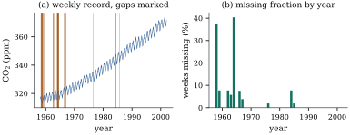

41.1 Missingness mechanisms
A data set with holes carries two kinds of information: the values that were recorded, and the pattern of which values were recorded at all. The second decides whether any analysis of the first means what it appears to. This section gives the pattern a probability model.
41.1.1. Notation
Write the complete data as an array
The array
Here
41.1.2. Three classes
Let
(a) missing completely at random (MCAR) if
(b) missing at random (MAR) if
(c) missing not at random (MNAR) otherwise.
MCAR implies MAR, and the two buy different things. Under MCAR the recorded units are a random subsample, so every analysis of them estimates what it would have estimated with no losses, at the price of a smaller sample. MAR says less: the recorded units are a biased subsample, but the bias is a function of recorded variables, so a method using those variables correctly can undo it.
Warning. The names have misled generations of readers. “Missing at random” does not mean the holes are haphazard; it means they are haphazard within each configuration of the recorded values — a strong assumption in modest language. “Missing completely at random” is the haphazard one.
Definition Definition 41.1.1
states MAR at the realized
41.1.3. What each class looks like
A survey records age
So “the mechanism” is a property not of a variable
but of the pair (variable, recorded variables). If the
survey also recorded occupation, and high earners skip
only because they hold occupations whose members skip,
the third story becomes MAR once occupation joins
The weekly averages of the continuous Mauna Loa
record of atmospheric carbon dioxide run from March 1958
to December 2001 and cover
They are not spread evenly. Before 1970,
Whether it is MAR given time is a question about the instrument, not about the numbers. The published rule is that a day contributes only if the analyser ran steadily for at least six hours, and a week with no such day contributes nothing. So the question is whether the analyser’s failure to deliver six steady hours is related to the concentration it would have read — plausibly not, if the failures are electrical or logistical; plausibly so, if unsettled air both disturbs the instrument and moves the reading. Nothing in Figure 41.1.1 can settle that.

import numpy as np
import statsmodels.api as sm
co2 = sm.datasets.co2.load_pandas().data["co2"] # one value per week, some absent
t = co2.index.year + (co2.index.dayofyear - 0.5) / 365.25
r = (~co2.isna()).to_numpy().astype(float) # 1 = recorded, 0 = missing
n, n_mis = len(r), int((1 - r).sum())
print(f"{n} weeks, {n_mis} missing ({100 * n_mis / n:.1f}%)")
era = (t >= 1970).astype(float) # one observed covariate: is it 1970 or later?
rate_early = 1 - r[era == 0].mean()
rate_late = 1 - r[era == 1].mean()
print(f"missing before 1970: {100 * rate_early:.1f}% from 1970 on: {100 * rate_late:.1f}%")One feature of
41.1.4. Why the class cannot be read off the data
Let
(a) for every conditional density
(b) one of these choices,
Proof. The observed data are
(a) Given the three pieces and a candidate
(b) Abbreviate
Idea. The missing values are missing. No cleverness recovers the conditional distribution of what was not recorded given what was; a choice of that distribution is the assumption, and different choices fit the observed data identically. MAR is one such choice: convenient, often defensible, never verifiable.
Two consequences. A test of MCAR against MAR is possible, that comparison involving recorded variables only, and Little (1988) gives one; a test of MAR against MNAR is not. And a sensitivity analysis is not an optional extra but the only way to report what the data do not determine (Section 41.6).
Finally, the classes of Definition 41.1.1
describe the world; whether a procedure works is a
property of the pair. Under MCAR nearly every
method is valid, including dropping incomplete records.
Under MAR with distinct parameters, likelihood and
Bayesian inference with a correct model for
41.1.5. Exercises
A. Check your understanding
Classify each mechanism as MCAR, MAR or MNAR with respect to the recorded variables named.
(a) A blood assay is run on a random one-third of the samples chosen by a random number generator; age, sex and diagnosis are recorded for all.
(b) In a weight-loss trial, participants who have gained weight since the last visit stop attending. Weight at every previous visit is recorded.
(c) A scale reads “over range” and records nothing whenever the true weight exceeds
(d) A questionnaire item is missing for everyone interviewed by one interviewer, whose identity is recorded.
Solution.
- (a) MCAR. (b) MNAR for the current visit’s weight, since whether it is recorded depends on that weight itself; it would be MAR if attendance depended only on the previous, recorded visits. (c) MNAR, and of an extreme kind: missingness is a deterministic function of the unrecorded value. (d) MAR given the interviewer, and not MCAR; without the interviewer’s identity recorded it would be MNAR given the recorded variables, which is what Definition 41.1.1 measures.
Show that MCAR implies MAR, and explain why no
enlargement of
B. Practice
Let
Solution. Definition Definition 41.1.1
asks that
Two variables
Let
Solution. The probability depends
only on the recorded
C. Going deeper
Let the units be independent, each with